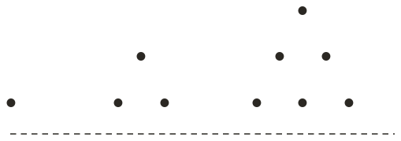

Westonbirt Maths · Properties of Numbers
Triangular Numbers and Sequences
Name: ______________________ Date: ____________
1
Draw the next dot triangle, and count its dots.
2
Given that the 13th triangular number is find the 14th.
3
Continue … for two more terms.
4
Is a triangular number?
5
Which are triangular: ?
Ext
Given that the 20th triangular number is find the 19th and the 21st.
